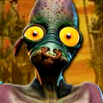

 Oddworld - Abe's Exoddus
Details
| Playtime | Not Played |
| Last Activity | Never |
| Added | 21/02/2024 18:48:22 |
| Modified | 20/05/2024 22:32:56 |
| Completion Status | Not Played |
| Library | Playnite |
| Source | |
| Platform | Sony PlayStation |
| Release Date | 17/11/1998 |
| Community Score | 83 |
| Critic Score | 88 |
| User Score | 0 |
| Genre | Adventure Platformer Puzzle |
| Developer | Oddworld Inhabitants |
| Publisher | GT Interactive Oddworld Inhabitants |
| Feature | Single Player |
| Links | |
| Tag | |
Description
The game continues the story of Abe, charting his efforts to save his fellow Mudokons from another plot by the Glukkons to exploit them. Abe discovers that the Glukkons are enslaving Mudokons, this time to produce a drink called Soulstorm Brew, which uses Mudokon bones and tears as its ingredients. The player assumes the role of Abe, embarking on a quest to halt production of SoulStorm Brew.
The game was released to similar critical acclaim as the first title. Reviews praised the game's ability to allow the player to quick save anywhere they liked, a feature that was not present in Abe's Oddysee, while noting that it was very similar to that title. The game won multiple awards upon release.
On March 14, 2016, it was announced that Oddworld Inhabitants are working on a follow-up to Oddworld: New 'n' Tasty! (a 2014 Abe's Oddysee remake) titled Oddworld: Soulstorm. The game page confirms that this title is inspired by Abe's Exoddus and that the new game is going to be a re-imagining of Abe's Exoddus.
Gameplay
Abe's Exoddus is a two-dimensional platform game, with many of its elements taken from the previous title, Abe's Oddysee. The game is split into screens; when the player moves into the edge of the screen, the environment is replaced, just like in the previous title. Most screens include various puzzles that must be solved through the use of Abe's unique abilities: "GameSpeak", possession, controlling mine cars, activation or deactivation of mines or levers, and rocks, grenades, or bones that can be picked up and used for different purposes. Normal abilities include creeping, walking, running, rolling, hoisting, jumping, and crouching, all of which have specific application and make up a necessary arsenal of moves.
The game features no user interface or heads-up display. Information is conveyed to the player through instructive screens that can be activated by the player character, or through scrolling messages in the background. Characters do not have hit points; instead, being attacked (such as being shot or mauled) or touching a hazard (such as a bone drill or an exploding mine) or falling either from high places or into a pit generally causes instant death. However, the player has unlimited lives, and upon death will re-spawn at the last checkpoint they reached. Abe's Exoddus includes an option to quick save which allows the player to designate their own checkpoints, a feature which was not present in Abe's Oddysee due to programming conflicts and which attracted criticism of that title.
While the focus of the gameplay is surmounting screens, there is a secondary focus on rescuing enslaved Mudokons. GameSpeak is a pivotal ability in this respect; by pressing combinations of buttons, the player character will utter short phrases that can be used to control allied non-player characters—to pull extra levers, to follow the player character, or simply to wait.
Unlike the first game, Mudokons have emotional states and status ailments that affect how they respond to Abe. Mudokons may be angry, wired, depressed, sick, or blind, and each state must be dealt with differently by the player. Angry, wired or depressed characters can be consoled through specific GameSpeak commands. An "angry" Mudokon (who flash red whenever they speak) will either repeatedly slap nearby Mudokons or work dangerous traps and can be told to "stop it", though Abe must tell them he is "sorry" to calm them down. If a "depressed" Mudokon (blue) witnesses too many deaths of other Mudokons or if he is slapped, he will start to hit himself in the head and eventually commit suicide. Abe again can prevent this by saying "stop it" and remove the ailment by telling them he's "sorry". Both angry and depressed Mudokons will not follow Abe if he tells them to. Clouds of laughing gas will turn Mudokons "wired" (lime), causing them to hyperactively run in Abe's direction and in some cases make it more difficult to get past enemies and obstacles. They will only calm down when slapped but the slap will have no effect if done within the gas cloud. "Sick" Mudokons will not respond to any GameSpeak command whatsoever (aside from being slapped) and can only be cured with a special chant, obtained when Abe finds a helper character. Blind Mudokons (distinguished by pale skin and, story-wise, with their eyes sewn shut to keep them from knowing what they were digging up in the Necrum Mines) will keep walking in the direction of Abe's voice, and must be told to "wait" before they walk into a hazard.
Possession is the player character's ability to take control of certain characters in the same screen by chanting. When a character is possessed, the player can use their abilities and weapons to find otherwise unreachable areas or levers, kill enemies, or as part of solving puzzles. However, when possessing a character, the player character remains immobile and vulnerable to attack. Possessing a Slig in particular sometimes has to use voice commands to solve puzzles. This is done with an "Ackack!" which the game refers to as 'BS' "Ay!" which is referred to in the game as 'S'BS' and a laugh. The whistling passwords have been removed from the previous game.
The player can abandon possession of a creature at any time. Scrabs or Paramites will be released without harm when abandoned, while Industrialists (Sligs and Glukkons) will burst into pieces. If the player character has drunk Soulstorm Brew, they will be able to possess their own fart, which can then be used as a flying explosive and will detonate either when control is abandoned, or after a period of time.
Mudokon slaves (including blind ones) are rescued through Bird Portals. If the player character chants when in the same screen as a Bird Portal, the portal will activate, and any nearby Mudokon slaves will run through it, disappearing. Rescuing Mudokons is not usually crucial to progressing through the game; however, rescuing at least 150 is necessary to get the good ending, and many secret areas revolve around rescuing a few Mudokons in particularly complex situations. There is an alternative ending known as the 'Maximum Casualties' ending. If the player kills all 278 Mudokons, the player is awarded with invincibility.
The player can also gain the ability to turn into the Shrykull, a Mudokon supernatural demigod. Abe acquired this power at a late stage in Abe's Oddysee. The ability is earned by sending a certain number of Mudokons through a Bird Portal at once, denoted by a number circulating with the birds. With the ability, the player can enter a screen with enemies or explosives, chant to transform into the Shrykull, and vaporize all enemies and hazards on the screen. Afterward, the player character reverts into their Mudokon form. Achieving the ability and doing such is necessary to get past certain points in the game. The player can only turn into the Shrykull once each time they earn the ability, so where and when they choose to use it is important.
Allies, enemies and wildlife
Allies in the game include Mudokons, humanoid species encountered as rescuable slaves and helpers. Normally, they will follow any GameSpeak-given order, but as described above, some Mudokons will be emotional and must be consoled by the player character first. The player character can also possess other creatures, in order to gain help with a task. For example, when possessing a Paramite, the player character can use GameSpeak to communicate with other Paramites, in much the same way as Mudokons. Scrabs also have minor abilities of GameSpeak, but are limited to shrilling, which activates the ability to attack.
Enemies in the game primarily consist of Sligs, semi-robotic creatures who will attempt to kill the player character on sight. Although most have mechanical legs and carry machine guns, some Sligs wear helicopter flight packs and launch grenades. Some Sligs choose to sleep without wearing mechanical legs, in which case they are vulnerable until they can obtain a set. Sligs can be possessed by the player character, who can then control the Slig and utilize its weapon. Sligs cannot see in dark shadows, which create natural hiding places for the player character. Sligs are often accompanied by Slogs, bipedal doglike creatures that chase and attack the player character on sight. Slogs can be commanded if the player possesses a Slig, and can be ordered to attack and kill enemies. Sloggies are the puppy form of Slogs, and are slower but just as deadly if the player character encounters them. Slogs and Sloggies can be distracted with bones.
Other enemies include Greeters, robotic security guards originally designed for public speaking and advertising, until they began to attack their customers. Greeters have motion detectors, and if the player character or another Mudokon triggers a Greeter's detector, the Greeter will give chase and attempt to kill the victim with an electric charge.
Glukkons feature as the game's primary antagonists. Glukkons are tall-foreheaded, humanoid creatures who are ruthless, malevolent businessmen. They walk on their arms as their feet are located upon their chest, and as a result they are physically defenseless and rely on Sligs to protect and serve them. They are the owners and bosses of the industries Abe visits throughout the game, and the masters of the Mudokon and Slig slaves. Glukkons can be possessed by the player, and can be made to command Sligs through GameSpeak, either to kill other characters, or to pull levers and move platforms.
Animals and wildlife consist of the Scrabs and aforementioned Paramites, both carnivorous predators that are encountered in the burial vaults of Necrum. Scrabs are highly territorial and chase any other life form on sight. Should they encounter another Scrab, a short fight ensues in which one is killed. Paramites are pack hunters, and when the player encounters a single Paramite, the Paramite will flee and not attack the player unless they are cornered. When encountered in groups of two or more, Paramites will pursue and attack the player. Paramites can be distracted with chunks of meat.
Other wildlife include the Fleeches, wormlike creatures that live in the Oddworld underworld. When woken from sleep, they will chase the player character and any other Mudokons, attacking with their long tongues before swallowing the victim whole. Fleeches fear Scrabs and Paramites and try to avoid them whenever possible. Fleeches are the only enemy that cannot kill Abe in one hit and it is possible to run away from Fleeches while they are attacking before they hit Abe enough to kill him. They are also the only enemies that can navigate up platform edges. Slurgs, the lowest form of life on Oddworld, are often found alongside Fleeches, as when stepped on by the player character, Slurgs emit a noise that wakes Fleeches from sleep. They can also be eaten by possessed Paramites without disturbing any nearby sleeping Fleeches.
Story
The game opens with the Mudokons celebrating the destruction of RuptureFarms and their rescue by former slave-turned-hero Abe. However, the celebrations cause Abe to fall from a stage and lose consciousness. While unconscious, he receives a vision from three Mudokon spirits, who inform him that the Glukkons are using Mudokon slaves to exhume the bones of their dead at the Necrum, the ancient burial grounds of the Mudokons. Upon awakening, Abe leaves for Necrum with a group of fellow Mudokons to uncover what the Glukkons are up to, and quickly discover the burial grounds have been turned into mines, with many Mudokons blinded to prevent them knowing what they are extracting.
After initially being separated from his friends, Abe reunites with them at a vending machine that dispenses a new drink called Soulstorm Brew. Despite his protest, his friends -who are desperate to quench their thirst- swiftly begin drinking every bottle of Brew from the vendo and fall sick from doing so. Abe quickly discovers that the Brew is made from the bones of the Mudokons, and proceeds to sabotage the mines. In order to heal his sick friends, he soon finds himself forced to locate the burial vaults of Necrum and liberate its trapped Mudokon spirits. In doing so, Abe is granted the power of healing by the three spirits who contacted him, allowing him to heal his sick friends, who in turn help him to head for the FeeCo Depot - a large shipment and transportation hub.
Upon arriving, Abe learns that three high-ranking Glukkons have sealed off the entrance to the Soulstorm Brewery to prevent him sabotaging it. To unlock access, he quickly tracks down each Glukkon, possesses them, and uses them to unlock each security measure they control. Travelling to the Brewery, Abe soon discovers the Brew not only uses Mudokon bones, but also their tears, which are extracted from slaves by machines that repeatedly electrocute them. While safely rescuing the victims, Abe discovers the Brewery can be destroyed by overloading its main boiler. Upon doing so, the ending received is determined by the number of Mudokons saved by the player: if less than 150, Abe's friends gang up on him for not helping the slaves, and leave him attached to a tear extractor, causing him to be killed as a result, ending the game from there; if 150 or more are rescued, Abe succeeds in destroying the Brewery, and is given a hero's welcome upon his safe return, whereupon Abe vows to seek out other Mudokon slaves, while one of his friends opens a rehab clinic for Mudokons recovering from the Brew, resulting in the events of Munch's Oddysee.
Development
Following the overwhelming success of Abe's Oddysee, GT Interactive, the publishers of Abe's Oddysee and Abe's Exoddus, pushed for a sequel to be made by Christmas 1998. In order to meet this deadline, Abe's Exoddus was made to run on the same game engine as Abe's Oddysee, and was completed in nine months. Lorne Lanning, the director of both games, stated that "we killed ourselves getting Abe's Exoddus done in nine months. It was brutal."
The Game Boy Color port was released as Oddworld Adventures 2, developed by Saffire and published by GT Interactive in November 1999. The game is a significantly cut-down version of Abe's Exoddus, with only a few similar levels and an absence of plot.
An emulated version of the PlayStation version was released for the PlayStation 3 via PlayStation Network on October 22, 2009 in North America and on June 2, 2010 in Europe.
Reception
In January 1999, the Verband der Unterhaltungssoftware Deutschland presented the PlayStation version of Oddworld: Abe's Exoddus with a "Gold" award, indicating sales of at least 100,000 units across Germany, Austria and Switzerland.
Abe's Exoddus received mostly positive reviews upon its release. Edge praised Abe's range of abilities because they can be used in "lateral [and] unrelated" ways, but criticized the general gameplay for being similar to its predecessor. In contrast, GameSpot stated, "though the Exoddus gameplay is essentially more of the same, it's more of a good thing". PC Zone praised the game's cutscenes, stating that "the cut-scenes are brilliantly created (especially in the sound department)". IGN gave particular praise to the game's graphics: "The 3D characters are better looking than the previous iteration, and more animated backgrounds and moving parts liven up the slightly old formula".
Criticism varied between reviews. GameSpot's sole criticism was of the game's two-player mode, stating that "the waiting game just doesn't parallel the egocentric fun of keeping this title to yourself". PC Zone focused on the game's difficulty, stating that "it's too f**king hard ... You sometimes start to dread moving into a (obviously harder) new area of the game". IGN criticised trial and error gameplay, stating that "the same trial-and-error scheme is frustrating as a thorn in your heel. Several areas simply leave you stranded, and you have to start over."
Despite these criticisms, the game won many awards, including the E3 Showstopper award from GamePro in 1998, the E3 Best of Show Winners List, the Best Action/Adventure PSX Game award from Next Level Holiday Guide in 1999, and the 1998 Best PSX Adventure Game award from Game Revolution in 1999. It was nominated for CNET Gamecenter's 1999 "Best Arcade Game" award, which ultimately went to Rayman 2: The Great Escape. In the United States, the computer version of Abe's Exoddus sold 9,499 copies during 1999.
In order to further market the game developer Oddworld Inhabitants submitted a 15-minute short film of looped cinematics for the 'Best Animated Short Film' category of the 71st Academy Awards. The game's cinematics reportedly cost around $2 million to develop, about half of the game's total development budget. Though the film failed to meet the shortlist CEO of Oddworld Sherry McKenna stated the pioneering move was done in order to increase the video game industry's reputation in the animation field:
During the 2nd Annual Interactive Achievement Awards, the game was named a finalist by the Academy of Interactive Arts & Sciences for "Console Adventure Game of the Year" and "Console Game of the Year", which ultimately lost both awards to The Legend of Zelda: Ocarina of Time.
Related games
Oddworld: Soulstorm, which is "a complete story retake" of the game according to Oddworld Inhabitants, released in April 2021 for Windows, PlayStation 4 and PlayStation 5.